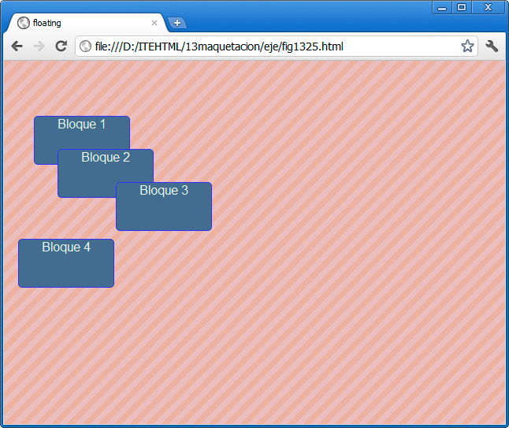
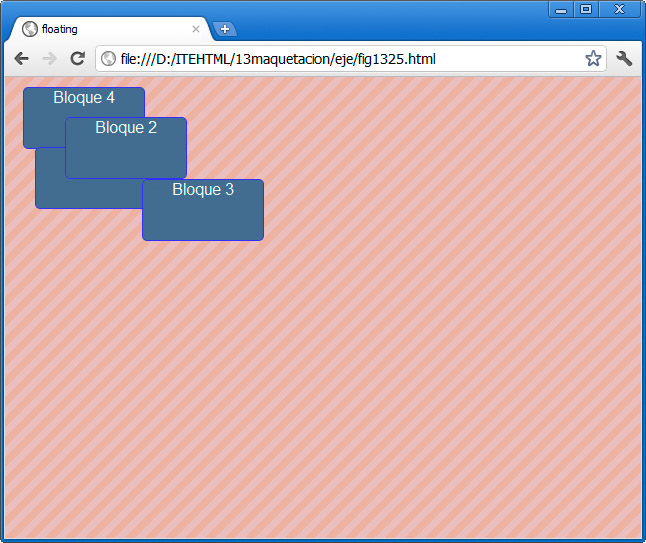
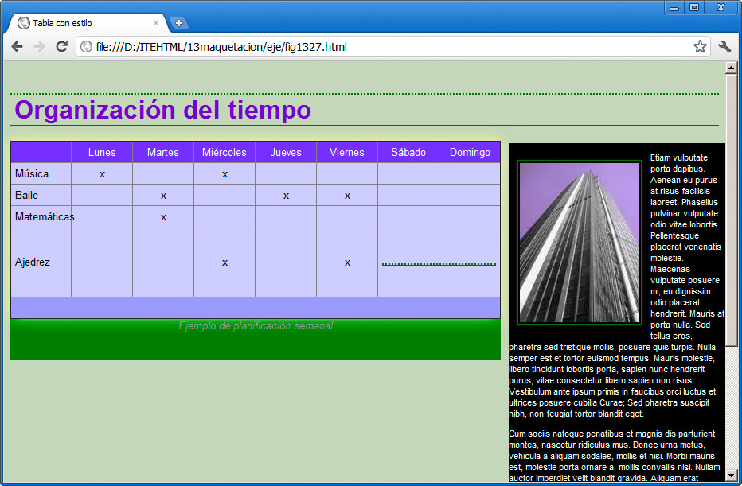

La propiedad position se emplea para definir el tipo de posicionamiento de un objeto en la pantalla según diferentes valores. Además se acompaña de las propiedades left (izquierda) y top (arriba) para especificar la distancia que tendrá el objeto respecto al borde izquierdo y al superior.
Hagamos una prueba con este ejemplo:
div#bloque1 { position:fixed;top:60px;left:20px;}
div#bloque2 { position:fixed;top:30px;left:50px;}
div#bloque3 { position:fixed;top:20%;left:20%;}
Cada valor diferente de position mostrará un resultado diferente:
- fixed: indicamos que se van a especificar unos valores determinados; los elementos dejan de estar ocupando sus lugares en la pantalla. La figura muestra un ejemplo:
- relative: se indicarán también los lugares, pero en este caso sus huecos sí permanecerán. En la figura se ven los valores relativos. Podemos ver que el bloque 4 no se ha desplazado a la parte superior, como en el caso anterior, ya que las posiciones de los otros tres bloques se reservan.

- absolute: la posición de cada elemento se define respecto al anterior que la tenga modificada o del inicio de la página, si es el primer elemento absoluto.

Ya sea mediante porcentajes o con valores exactos, el uso de este tipo de posicionamiento nos permitirá distribuir los bloques de una página web en la posición deseada.
En el modelo que hemos trabajado a lo largo de este módulo resultaría muy simple reubicarlos horizontalmente, con el siguiente código:
<!DOCTYPE html>
<html>
<head>
<meta http-equiv="content-type" content="text/html; charset=UTF-8">
<title>Tabla con estilo</title>
<link href="position.css" rel="stylesheet" type="text/css">
</head>
<body><div id="cabecera">
...
</div>
<div id="bloqueprincipal">
….
</div>
<div id="bloquelateral">
….
</div>
</body>
</html>
Cada uno de los tres bloques tiene algunos estilos aplicados:
#cabecera {
font-family: Arial, Helvetica, sans-serif;
color: rgb(255, 255, 255);
}
#bloqueprincipal {
width: 68%;
background-color: rgb(0, 126, 0);
position:absolute; top: 100px;
}
#bloquelateral {
background-color: rgb(0, 0, 0);
font-family: Arial, Helvetica, sans-serif;
font-size: 0.7em;
color: rgb(255, 255, 255);
position: absolute;left:70%;100px;
}
Y éste es el resultado:

La combinación del 68% de anchura del bloque principal con el comienzo del bloque lateral, que lo hace en el 70%, nos permite tener un diseño que se ajusta a la resolución de la pantalla.
También podríamos haber optado por un modelo fijo, basado en píxeles en todos los tamaños.
Nota
Ésta es una de la partes del uso de las hojas de estilo que más cuesta controlar; la combinación entre tamaños, porcentajes y posiciones es a veces compleja y cuesta conseguir los resultados esperados, pero con práctica se consiguen.
Actividad 10
Los planos
Al utilizar la propiedad position podemos colocar las capas una encima de otras. El plano en que se sitúa cada capa se puede modificar mediante la propiedad z-index seguida de un número.
Los valores más altos indican que el bloque se situará encima de los demás, en un plano más alto, mientras que los valores menores se situarán detrás. Este sistema de poner unos bloques sobre otros se utiliza para mostrar ventanas emergentes sobre la página, galerías de imágenes, etc.
Pregunta de Elección Múltiple
|
Indica la posición de cada elemento definido respecto al anterior que la tenga modificada o del inicio de la página, si es el primer elemento absoluto. | |
|
Indica que se van a especificar unos valores determinados respecto a la posición que van a ocupar.
| |
|
Indicarán el lugar del contenido pero en este caso sus huecos permanecerán.
|